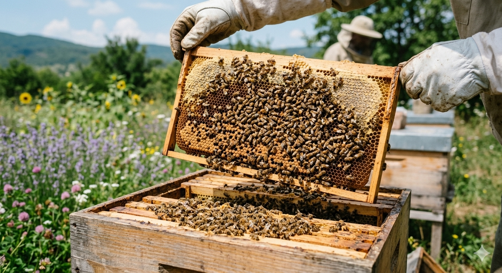

При превръщането на нектара в мед протичат два основни процеса - изпаряване на водата (до по-малко от 20%) и хидролизиране на захарозата до глюкоза и фруктоза под действието на инвертазата. Дълго време се е смятало, че основната част от водата на нектара се отстранява още по време на полетата на пчелата към кошера чрез преминирането и през полупропускащата стена на медовото стомахче в хемолимфата. Установено е достоверно, че стените на стомаха са непропускливи по отношение на водата. Освен това водното съдържание на материала, донесен в кошера, е по-високо, поради което изходният нектар поради разделянето му от секретите на глътъчните жлези. Волното съдържание на нектара се редуцира в кошера до 15-20%. Нелетящите пчели, поели нектара от събирачките, преместват многократно от медовото си стомахче към хоботчето и обратно. По този начин нектарът под формата на тънко фолио влиза в допир с топлина и сух въздух на кошера и водното му съдържание намалява до 35-40%.
Същевременно пчелите поставят полупреработките на нектар на дъното или на стените на въздушните килийки като малки капчици тънко фолио. Обикновено се запълват от 1/4 до 1/3 от килийките. Изпаряванетото на водата продължава чрез интензивно вентилиране на ко-шера, извършвано от пчелите. Когато водното съдържание се е намалило под 20%, пчелите запълват дъждовните води и ги запечатват целта да предотвратят поемането на водата от въздуха. Нектарът окончателно B продължение на 1-3 дни се преработва в зависимост от водното му съдържание, температурата и влажността на въздуха в кошера, силата на пчелното семейство, притока на нектар и др. По време на преработката на нектара протичат сложни биохимични процеси, които се засичат преди всички въглехидрати. Под действието на инвертазата захарозата се хидролизира до глюкоза и фруктоза.